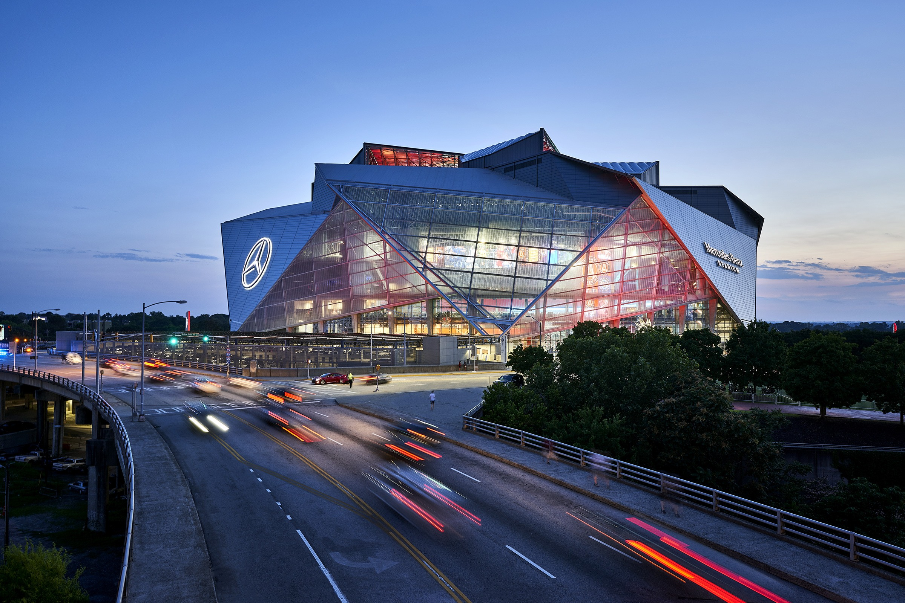
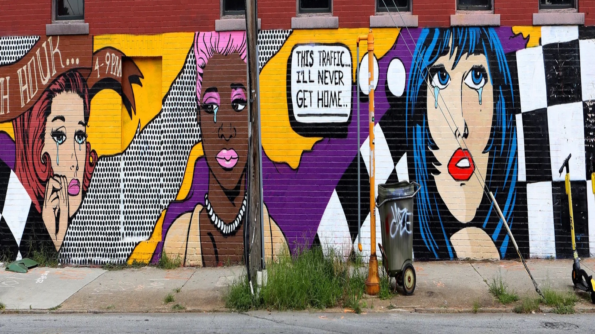

Sports
Sports in Atlanta has a rich history, including the oldest on-campus NCAA Division I football stadium, Bobby Dodd Stadium, built in 1913 by the students of Georgia Tech. Atlanta also played host to the second intercollegiate football game in the South, played between the A&M College of Alabama (now Auburn University) and the University of Georgia in Piedmont Park in 1892; this game is now called the Deep South's Oldest Rivalry. The city hosts college football's annual Chick-fil-A Peach Bowl and the Peachtree Road Race, the world's largest 10 km race.

Whatever your sports-speed, you'll find it within
Atlanta's professional sports teams.
The Atlanta Hawks and Atlanta Dream will deliver
buzzer-beater moments that will leave you
breathless.
Chant away to Atlanta's Major League Soccer club,
Atlanta United FC.
What about baseball? Feel the thrill of home runs at
an Atlanta Braves game. Golf and tennis? That's
covered, too. See your favorite tennis players serve
aces at the Atlanta Open.
Art
Atlanta is in the midst of a cultural renaissance. The city's scene has long commanded respect, but within the last few years, Atlanta has arrived. Their hip-hop scene sets the standard for the industry. Their theaters are premiering some of the most-produced plays across the nation. Their dancers can be seen from Broadway to the Kennedy Center—and that's before we even get into our film and television industry. The Covid-19 pandemic presented innumerable challenges for working artists, but they still gave their all and solidified Atlanta's position as a cultural destination.
From immersive, virtual reality experiences to Zoom poetry slams, artists entertained us and articulated our experiences during a harrowing global pandemic and heart-wrenching racial reckoning. Some artists found it impossible to create in the midst of unrest, but others experienced a fury of inspiration. Either way, everything that bubbled up in them—and in us—is coming forth now. The city will benefit from the art emerging from this moment in time for decades to come, yet many of the city's artists and artistic institutions have struggled to re-engage longtime patrons, much less cultivate new ones.